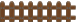
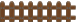

Territory
روی حیوانات کنار آنیک حصار کلیک کنید، تا آن را جابجا کنید.
هدف شما این است که:
هر منطقه دقیقاً شامل حیوان باشد.
آن منطقه حداقل شامل ببراس یا ببراسها باشد
روی حیوانات کنار آنیک حصار کلیک کنید، تا آن را جابجا کنید.
هدف شما این است که:
هر منطقه دقیقاً شامل حیوان باشد.
آن منطقه حداقل شامل ببراس یا ببراسها باشد

 
